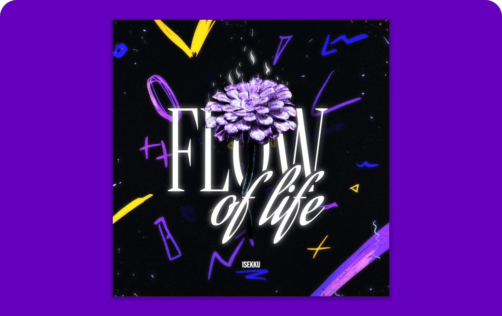
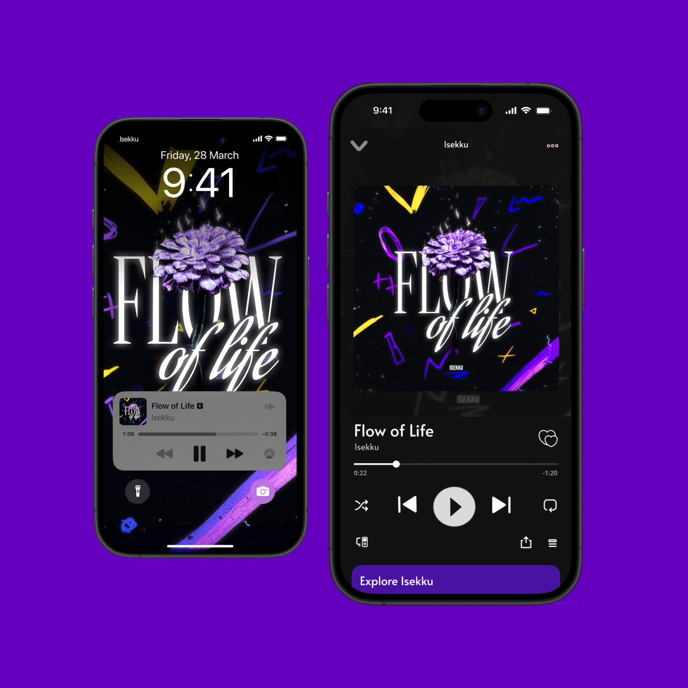
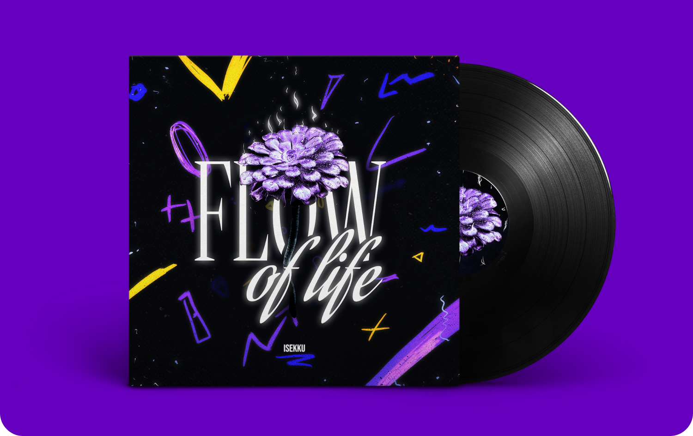
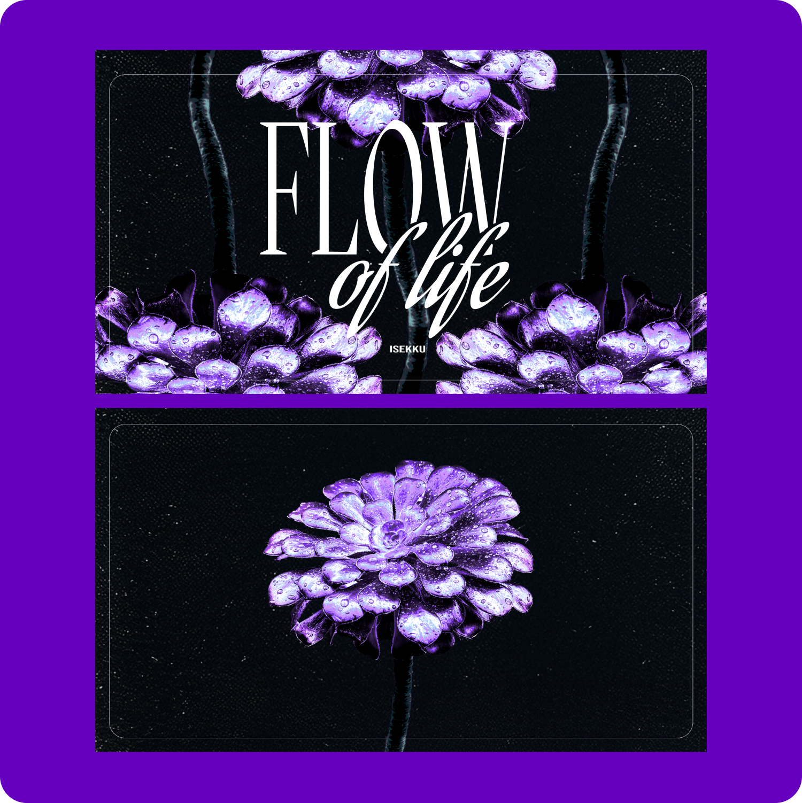

Album Cover for Isekku - Flow of Life
Graphics / Visual Design / Album Cover
This cover design came to life through a collaboration with music producer and musician Isekku, starting from a casual conversation during the holidays and evolving into a creative session in his home studio.
I incorporated a photo of a succulent I captured at the Glasgow Botanic Gardens, blending natural textures with modern design. I love working with my own photography to add a personal touch to my projects. The seamless flow of ideas throughout the collaboration made it a truly rewarding experience.



More to come!
Next, we’ll be working on the music video. Here’s a preview of what the title screen could look like.

Bringing the Vision to Life
Working on this project was a rewarding creative journey, from the initial concept to the final design. It was exciting to see how the visuals evolved alongside the music, and I’m looking forward to continuing the collaboration with the upcoming music video.